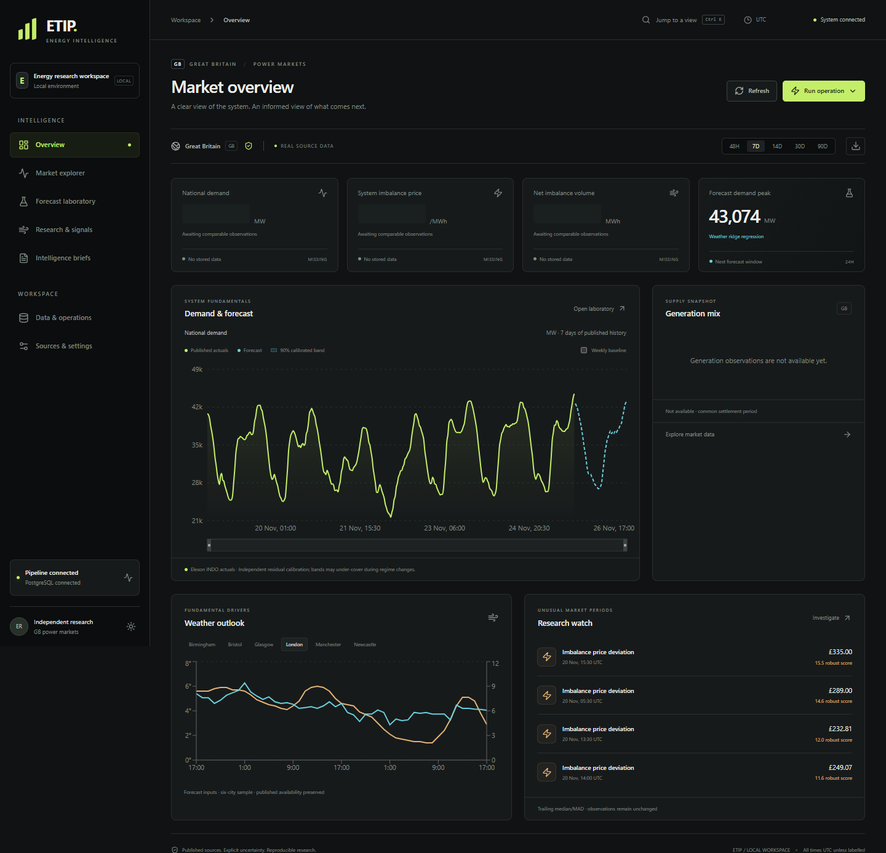

SELECTED WORK / IMPLEMENTATION / EVIDENCE
Behind the project card.
The problem I worked on, the decisions I made, and the evidence behind the result. Explore the work through the role you are hiring for.
AI / ML · Working local applicationEnergy Market Intelligence · Real data to evaluated forecasts
Read the case study +

The problem
Energy research needs trustworthy data availability, reproducible forecasts and clear evidence behind every market summary.
My contribution
I built a local GB energy application with real Elexon observations, archived Open-Meteo forecast runs, PostgreSQL persistence, a durable worker, FastAPI and an interactive Next.js dashboard.
Engineering decisions
Publication-aware lag and weather features prevent future observations from entering a historical forecast. Model selection uses an earlier validation period, followed by held-out walk-forward testing and independent residual calibration.
Validation & current scope
The recorded 25 November evaluation contains 86,002 observed market periods across series, 52,416 weather vintage records, 29 passing backend tests and five browser scenarios. Weather Ridge achieved 1,521.67 MW RMSE over 336 held-out periods, versus 2,174.49 MW for the weekly baseline. All 48 saved forecasts reproduced exactly. This is one historical window, not a profitability claim.
Python · PostgreSQL · FastAPI · Next.js · Time-series evaluation
Explore source, tests & research protocol →Software engineering · Implemented web productSellerMath · Marketplace profit calculators
Read the case study +
The problem
Sellers need to understand how fees, advertising and target margins change the economics of a product.
My contribution
I built a Next.js and TypeScript application with six calculator interfaces, separate calculation modules, marketplace fee configuration and reusable UI.
Engineering decisions
Keeping calculation logic separate from presentation makes numerical behavior testable and lets explanatory guides sit alongside results.
Validation & current scope
The earlier source review executed 31 calculation and supporting checks successfully. Fee constants still need independent checks against current marketplace terms; a unit-test pass is not a guarantee that a platform has not changed its fees.
Next.js · TypeScript · React · Calculation tests
View source on GitHub ↗AI / ML · Implemented extraction workflowDocument extraction · PDFs to structured reporting
Read the case study +
The problem
Long application PDFs contain repeated fields that are expensive to transcribe consistently into reporting templates.
My contribution
I built document downloading and PDF-processing scripts that extract text, identify the required format, use structured LLM extraction and append results to Excel.
Engineering decisions
PDF parsing, model extraction and workbook writing are separate concerns. A useful evaluation measures field-level correctness and explicitly handles missing or uncertain fields.
Validation & current scope
The implementation uses pdfplumber, a Groq-backed extractor and openpyxl. A labeled extraction benchmark has not yet been established. Client files, provider keys, application records and private templates are excluded from publication.
Python · PDF parsing · Structured extraction · Excel
Source available on request where sharing rights permit.Data engineering · Business automationOrder-document automation · Shopify, Lumise & Drive
Read the case study +
The problem
Orders can require repeated browser navigation, document downloads, folder organization and processing-status updates.
My contribution
I implemented a Python workflow connecting order records in Google Sheets with browser-based PDF retrieval and organized Google Drive uploads.
Engineering decisions
The workflow needs state tracking and retry behavior so an interrupted upload does not silently mark an order as complete. Credentials and browser sessions belong outside source control.
Validation & current scope
The code and README establish the integration path. No time-saving percentage or live client outcome is asserted. Client identifiers, order documents, service-account keys and session data remain private.
Python · Browser automation · Google Sheets / Drive APIs
Source available on request where sharing rights permit.Software engineering · Firebase applicationFlowMate · Scheduling and notes
Read the case study +
The problem
Scheduling, tasks and notes become difficult to maintain when each interaction has separate state and persistence behavior.
My contribution
I developed the later Firebase-backed web application with sign-in, scheduling, to-do and note interfaces, and asynchronous loading/error states.
Engineering decisions
I treat the earlier Firebase version as an iteration of the same project, rather than counting it as a second product. Deployed Firebase rules must be checked independently of frontend configuration.
Validation & current scope
The later source implementation supports the application workflow. Public deployment, active users and backend authorization behavior have not been independently verified.
JavaScript · Firebase · HTML / CSS · Application state
Source available on request where sharing rights permit.Software engineering · Database-backed applicationFood Waste Reduction Platform
Read the case study +
The problem
Food redistribution needs structured listings and consistent database-backed application workflows.
My contribution
I built an ASP.NET application with a SQL Server-backed domain and web interfaces for the platform workflows.
Engineering decisions
Database relationships, validation and controller behavior matter alongside the visible UI. A reproducible SQL Server setup is part of a useful technical handover.
Validation & current scope
The solution and implementation are present locally. The current case study does not claim a public service, live transactions or measured food-waste reduction.
C# · ASP.NET Core · SQL Server
Source available on request where sharing rights permit.AI / ML · Analytical projectHeart-disease classification · An evaluation study
Read the case study +
The problem
Comparing classifiers requires more than quoting the highest accuracy: preprocessing, split design and class-specific errors change how a result should be interpreted.
My contribution
I performed EDA, correlation analysis, feature engineering and classifier comparison on a structured heart-disease dataset.
Engineering decisions
The baseline script uses a stratified split and training-only scaling. The extended experiment needs preprocessing inside each cross-validation fold and an untouched final test before its results can be treated as a defensible benchmark.
Validation & current scope
A saved baseline CSV reports Random Forest test accuracy of approximately 89.7%; that historical result is not a fresh rerun or clinical validation. Dataset redistribution and provenance must be established before publishing raw records.
Python · Pandas · scikit-learn · Classification
Source available on request where sharing rights permit.AI / ML · Completed project; evidence being consolidatedNLP & LLM assistant workflows
Read the case study +
The problem
Language interfaces need a clear boundary between retrieved or supplied evidence and generated answers.
My contribution
My completed NLP work covers language-model-assisted application workflows, as recorded in my existing portfolio and approved AI/ML positioning.
Engineering decisions
For a technical case study I distinguish classification, embeddings, retrieval, prompting and fine-tuning instead of presenting them as interchangeable techniques.
Validation & current scope
Completion was previously confirmed by me. The model-specific implementation, held-out evaluation, inference measurements and deployment evidence are being consolidated; no fine-tuning or accuracy claim is invented here.
Python · NLP · Language-model integration
Source available on request where sharing rights permit.Data engineering · Professional analytics workBusiness analytics & dashboard reporting
Read the case study +
The problem
Raw business datasets need cleaning and consistent definitions before a dashboard can support decisions.
My contribution
At Devnesty I worked on analytical workflows spanning cleaning, transformation, EDA, reporting and interactive dashboards using Power BI, Tableau and Streamlit.
Engineering decisions
Metric definitions, input validation and data freshness are part of the work, alongside visual design. Private datasets and employer reporting are not suitable public source artifacts.
Validation & current scope
Professional experience covers these workflows. Client datasets and reporting artifacts remain private; public performance measurements are not available.
Python · SQL · Power BI · Tableau · Streamlit
Source available on request where sharing rights permit.Software engineering · C# applicationParking management & license-plate tracking
Read the case study +
The problem
A parking application needs to connect camera-derived plate information to an understandable management workflow.
My contribution
I developed a C# application incorporating camera/image-processing-based license-plate tracking and iterative integration testing.
Engineering decisions
Camera acquisition, image interpretation and application state should have distinct failure handling so an uncertain detection does not silently become a reliable identity.
Validation & current scope
The approved general CV supports this scope. The exact recognition library, recognition accuracy, billing behavior and deployment scale are not asserted without implementation evidence.
C# · Image processing · Integration testing
Source available on request where sharing rights permit.Data engineering · Implemented extraction pipelineResumable forum data extraction
Read the case study +
The problem
Large forum collections need resumable collection rather than a single fragile browser session.
My contribution
I built extraction tooling that processes forum data in stages and retains progress for longer-running collection.
Engineering decisions
Explicit checkpoints, duplicate handling and bounded retry turn a one-off scraping script into a maintainable data workflow.
Validation & current scope
The local implementation establishes resumability and extraction scope. No collection scale or reliability percentage is claimed. Session files, personal records and source-platform restrictions remain outside the public example.
Python · Browser automation · Checkpointing
Source available on request where sharing rights permit.Data engineering · Monitoring workflowMarketplace listing monitor & alerts
Read the case study +
The problem
Repeated marketplace searches can be turned into a monitored data stream with explicit delivery state.
My contribution
I implemented listing collection, matching and notification logic for a marketplace-monitoring workflow.
Engineering decisions
Duplicate suppression and failed-notification recovery are more important than treating every polling cycle as a new item.
Validation & current scope
Source inspection supports the monitoring path. Live marketplace and notification credentials are private; delivery performance has not been independently measured.
Python · Listing ingestion · Notifications
Source available on request where sharing rights permit.Data engineering · Focused automation utilityProduct catalog image enrichment
Read the case study +
The problem
A product workbook can contain incomplete image references that require repeated manual lookup.
My contribution
I built a Python utility that locates product image URLs and updates the corresponding Excel records.
Engineering decisions
The visible implementation starts from a defined catalog category. That narrower scope is documented instead of describing it as unrestricted universal product search.
Validation & current scope
The source supports catalog-to-workbook enrichment. Processing totals and matching accuracy have not been measured in a reproducible evaluation.
Python · Web extraction · Excel
Source available on request where sharing rights permit.AI / ML · Academic NLP projectFake-news text classification
Read the case study +
The problem
News classification is a supervised language-model problem requiring a defined label set and held-out evaluation.
My contribution
I developed transformer-based text-classification workflows using BERT, RoBERTa and the Transformers ecosystem, for a supervised NLP project.
Engineering decisions
Train/test separation and dataset provenance must be established before reporting comparative accuracy or broad claims about misinformation detection.
Validation & current scope
The work covers transformer-based classification. Dataset provenance, reproducible evaluation and a shareable checkpoint are required before adding a benchmark result.
Python · BERT · RoBERTa · Transformers
Source available on request where sharing rights permit.Software engineering · Professional work · SabaSoft Games StudioData-driven puzzle game systems
Read the case study +
The problem
A puzzle game needs reusable rules and responsive interactions across a large collection of level definitions.
My contribution
Since October 2026 I have worked on Luau gameplay systems covering a grid architecture, obstruction detection, lives, retries, hints and mobile/PC interfaces.
Engineering decisions
The system supports 771 JSON-defined levels. Level validation and modular state management are useful engineering challenges independent of any particular scene.
Validation & current scope
This is professional work, not a claim of sole ownership. Employer source, proprietary level files and private assets are not being uploaded. My responsibilities cover the gameplay and data-validation systems described here.
Luau · JSON validation · Modular gameplay · Device testing
Source available on request where sharing rights permit.Numerical outcomes are tied to their stated evaluation window. Illustrative project thumbnails in the gallery are not product screenshots. Client and employer source remains private where sharing permission is not established.